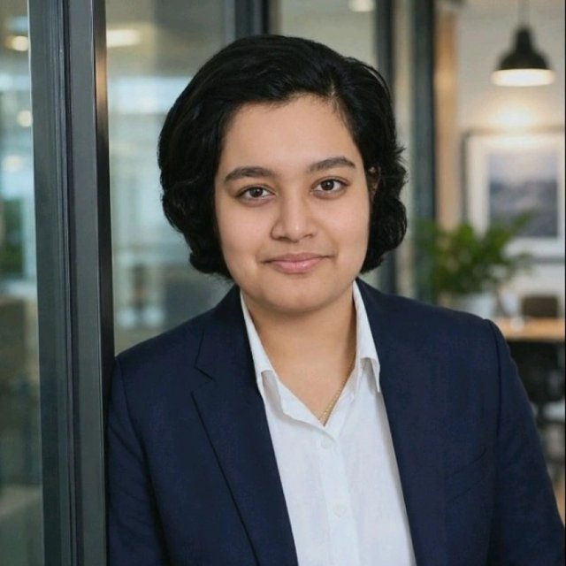

AI & Data Science Undergraduate · DRDO CAIR Research Intern · IEEE Computer Society Chair · Author · Building Causal AI & Reinforcement Learning Systems
Building scalable ML systems for causal reinforcement learning, financial AI, and physics-informed battery diagnostics. Research Intern at DRDO CAIR with interests in trustworthy decision-making systems.
Final-year B.E. student in Artificial Intelligence and Data Science at Nitte Meenakshi Institute of Technology, Bengaluru (CGPA 9.73/10, graduating 2027). Chair of the IEEE Computer Society Student Branch Chapter at NMIT. Research spans causal reinforcement learning, physics-informed neural networks, and the intersection of AI and electrochemistry, with a recurring interest in taking noisy, real-world signals (financial markets, battery impedance, sensor data) and building models that are both accurate and physically or causally grounded.
A causal RL framework combining Structural Causal Models with Counterfactual Experience Replay to improve sample efficiency under non-stationarity, trading across 30 assets in 5 sectors with causal graph-guided action masking.
Causal RL framework integrating Structural Causal Models with Counterfactual Experience Replay to improve sample efficiency in financial decision-making under non-stationarity. Dueling DQN and Discrete SAC across 30 assets in 5 sectors, with causal graph-guided action masking. Counterfactual augmentation reduced variance in cumulative returns vs. vanilla DQN.
Edge AI & robotics project running YOLOv8n on a Hailo-8 NPU for real-time inference (85% detection accuracy). Full perception-to-actuation pipeline with a camera-aligned scoop mechanism on a 4WD suspended chassis, deployed via ONNX and the Hailo Dataflow Compiler on Raspberry Pi 5.
Physics-informed neural network predicting battery state-of-charge from EIS data, with impedance-magnitude correlation and smoothness constraints built into the loss function. Benchmarked against Random Forest, Gradient Boosting, and XGBoost, achieving 0.96 accuracy with physically consistent predictions.
GPU-accelerated ResNet50 + Transformer encoder hybrid with landmark-inspired spatial attention, achieving a 12% accuracy improvement over baseline CNN, validated on accuracy, precision, recall, and F1.
Raju, Amruthamsha P. Am I Being Fair? The Question Behind Every Decision. Amazon Kindle Direct Publishing (KDP), 2026. ISBN: 9798251273830.
Raju, Amruthamsha P., Ramesh, Disha, Naik, Praveen, and Jayaprakash, Gururaj Kudur. "Enhancing Predictive Accuracy Through Quantum AI." De Gruyter, 2024. DOI: 10.1515/9783111619323-002.
Raju, Amruthamsha P., Sudhakar, K., Rubini, P. "Investigating Squeeze-and-Excitation Placement in Residual Networks for Facial Emotion Recognition." Array, Vol. 31, Article 101163, Elsevier, September 2026.
P. Raju, A. "The Rise of Artificial Intelligence in Healthcare Systems." ANUSANDHANA: Journal of Science, Engineering and Management, Vol. 13, Issue 1, July 2025.
Raju, Amruthamsha P. "The Role of Artificial Intelligence and Machine Learning in Corrosion Prevention in Batteries." Elsevier (in press).
Raju, Amruthamsha P. "A Review on the Advancement of Supramolecular Materials for Bionic Skin." ACS Applied Bio Materials (under review).
Raju, Amruthamsha P. "Recent Advances in Sustainable Carbon Quantum Dots: Interface Engineering for Optoelectronic, Bioimaging, and Theragnostic Technologies." Bentham Science, Current Nanoscience (under review).
Raju, Amruthamsha P. "NeuroDB: Toward a Neuromorphic Database Engine: Architecture Design, Theoretical Foundations, and Simulation-Based Performance Analysis." Journal of Experimental and Theoretical Artificial Intelligence (under review).
Raju, Amruthamsha P., Bandi, Revanasiddappa, Jayaprakash, Gururaj Kudur, Ibrahim, Ahmed B.M., Naik, Praveen. "Physics-Informed Neural Networks for Lithium-Ion Battery State-of-Charge Estimation via Electrochemical Impedance Spectroscopy." Electric Power Systems Research, Elsevier (under review, Manuscript No. EPSR-D-26-07761).
Raju, Amruthamsha P. "Self-Powered Electrochemical Sensors for Energy Harvesting and Storage." RSC (under review).
A causal view of the CV itself: how foundations and experience feed into technical capability, how that capability produces the projects above, and how those projects translate into measurable outcomes and long-term goals.